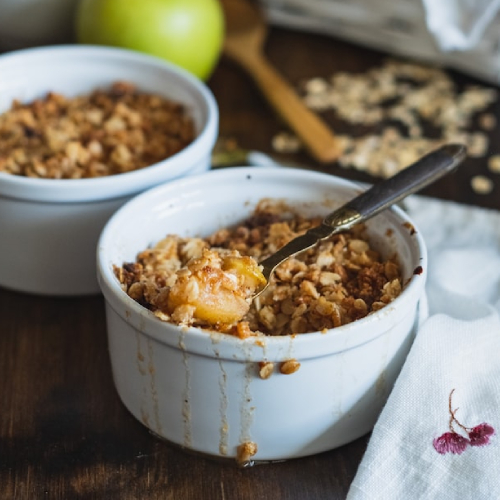

Apple Crumble

Delicious and Simple Apple Crumble
This is such a simple recipe to put together, but it tastes amazing! It's easy to make it gluten free by using your preferred all-purpose gluten free flour blend (I use Namaste Flour), and by making sure your oats are labeled gluten free.
Ingredients
Apple Filling
- 2 lb Granny Smith Apples
- 1 tbsp flour
- 1/4 cup sugar
- 1/2 tsp cinnamon
Topping
- 1 cup oats
- 1 cup flour
- 1 cup brown sugar
- 1/2 tsp baking powder
- 1 tsp cinnamon
- 1/2 cup melted butter
Instructions
- Preheat oven to 350F.
- Peel and cut apples into thin slices.
- Place apples in a bowl. Add flour, sugar, and cinnamon. Toss and spread out evenly in pie dish.
- Add topping ingredients in a bowl. Mix until clumps form. Spread out over apple filling.
- Bake for 35 to 40 minutes or until golden brown. Remove, and let sit for 10 minutes before serving.
Return to Home
Recipe adapted from Recipe Tin Eats
Photo Credit Didi Miam - Unsplash